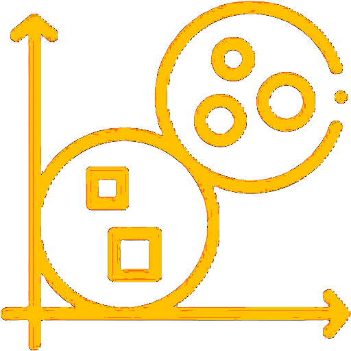

CREATE

COMPUTE

ANALYZE

Consider an example with three attributes: sepal length, sepal width, and species. The target attribute, which comprises three species (Setosa, Virginia, and Versicolor), is utilized to identify the nearest species from the three using the k-Nearest Neighbors. To start click on the CREATE tab.